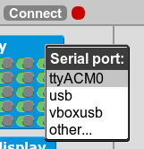
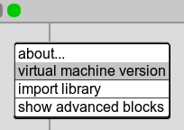

MicroBlocks is a new programming language inspired by Scratch that runs right inside microcontroller boards such as the micro:bit, the NodeMCU and many Arduino boards.
The MicroBlocks system allows for dynamic, parallel and interactive programming, just like in Scratch, but with the twist of letting your projects run autonomously inside the board without being tethered to a computer. Thus, MicroBlocks provides the immediacy and liveness of tethered blocks programming, while supporting real-world applications that require precision timing, autonomous operation, or physically embedding the processor into projects. For example, one might write a program to record acceleration data, then embed the microcontroller and a small battery in a model rocket to explore G-forces at launch time.
In other words, MicroBlocks lets you program your boards exactly like you would in Snap4Arduino, S4A or the Arduino extension for Scratch, and when you are happy with your program you can just unplug the board from your computer and everything will keep running as if by magic!
With MicroBlocks, you can build your own "real world" digital instruments, interactive jewelry, electronic games and measuring devices, all by using blocks.
Download the preliminary standalone microBlocks IDE. This package includes binaries for MacOSX, GNU/Linux and MS Windows. (Older versions are here.)
MicroBlocks is still pre-alpha software, so stay alert for bugs and come back often to check for new versions.
There is a Snap! IDE also in the works, but it is not yet public. Stay tuned.
If you are running a version of Windows earlier than Windows 10, you may need to install USB-serial drivers for your board. In the case of the micro:bit, you can follow these instructions:
Be sure to plug in the board before you run the driver installer.
With the board plugged in, you can check the COM ports in the device manager to find out which COM port is it connected to. We've seen COM3, COM5, and COM6 on various laptops.
On many Linux systems, users don’t have access to the USB serial port by default, so you will get an error when you try to open it. One quick solution to that is to launch MicroBlocks from the command line using “sudo”:
sudo ./ublocks-linux64bit
A more convenient long term solution is to add yourself to the group that owns the serial port as follows.
First, with the board attached, display the serial port entry with the command:
ls -l /dev/tty[AU]*
You'll see a line such as:
crw-rw---- 1 root dialout 166, 0 Jan 25 07:23 /dev/ttyACM0
The serial port’s group is the word after “root”, in this case “dialout”. Add yourself to that group:
sudo usermod -G dialout -a [YOUR_USER_NAME]
then log out and back in to make the change take effect.
Once this is done, you can start MicroBlocks simply by double-clicking on the Linux executable. Note that it still can be useful to run MicroBlocks from the terminal when debugging, since the “print” block logs messages to the terminal window.
If you have a BBC micro:bit, Calliope mini, or an AdaFruit board such as the Circuit Playground Express that supports loading binary files by drag-and-drop, you can just drop the appropriate .hex or .uf2 file onto the virtual disk for your board to install it.
If you have an ARM-based Arduino or any other board with Arduino IDE support, or if you just want to build the virtual machine yourself, read on.
The MicroBlocks virtual machine is written in C and C++. The Arduino platform is preferred, but it has also been built using the mbed platform (not supported). It can also be built for Linux-based environments such as the Raspberry Pi, and it should be portable to other platforms that have a C compiler with minimal effort.
The MicroBlocks virtual machine can be compiled and loaded onto a board using the Arduino IDE (version 1.8 or later) with the appropriate board installed and selected. Open the file "vm.ino", select your board from the board manager, and click the upload button.
Start MicroBlocks by double-clicking the executable for your platform (e.g. ublocks-win.exe), then click on the "Connect" button on top of the app and select the USB serial port from the menu:

Port names differ for each platform. In GNU/Linux your port names will start with "ttyACM" or "ttyUSB", in MacOSX they start with "cu.usbmodem" or "tty.usbmodem", and in Windows they start with "COM". In Windows, the correct port is usually the last one.
If you don't get an error, you should be connected to the board, and the indicator will change from red to green:
To ensure everything is working, right click on the green indicator and select "virtual machine version":

A small dialog should pop up showing the version of the virtual machine installed in your board.
You can find the source code for the MicroBlocks VM, MicroBlocks standalone IDE and Websockets to serial connector in our BitBucket repository.
The Snap! version of the MicroBlocks IDE can be found in this other BitBucket repository.
The MicroBlocks virtual machine is designed for 32 bit microcontrollers. It requires at least 8Kb of RAM and 40Kb of flash memory. For most supported boards, the virtual machine is built using the Arduino IDE and libraries, but it has been ported to vanilla Linux. In the past, it was also built using the mbed libraries, although that option is no longer maintained.
The following boards are officially supported by the MicroBlocks system:
The following boards are supported by the MicroBlocks system but present some limitations or problems:
For the latest list of supported boards their status, see Device List on our WIki.
MicroBlocks code is executed by a simple interpreter or virtual machine (VM) running on the microcontroller board. The instructions for this virtual machine are 32-bits consisting of an 8-bit operation (opcode) and a 24-bit operand:Technical Details
The MicroBlocks Virtual Machine
Instructions
<operand (24 bits)><opcode (8-bits)>
The opcode tells the virtual machine what to do. The operand is used to in different ways by different opcodes. For example, it can be used to encode constant values or jump offsets. Some opcodes don't use the operand at all, but both the interpreter and the compiler are simplified by using the same instruction format for all opcodes.
The interpreter is a stack machine. To execute a given opcode, its arguments (i.e. the values of any parameters) are first pushed onto the stack, then the code for the opcode is run. That code pops any arguments off the stack and, optionally, pushes a return value onto the stack.
For example, the instructions for "set user LED <true>" are:
pushImmediate true // push the boolean value 'true' setLEDOp // pop 'true' off the stack and set the state of the user LED to it
The instructions for "set user LED (tilt-x < 10)" are:
mbTiltX // pushes the value of the tilt X sensor pushImmediate 10 // pushes the number 10 greaterThan // remove the two arguments and pushes true if tilt-x is less than 10 setLEDOp // pop a boolean value and and set the state of the user LED to it
MicroBlocks appears to run many scripts at the same time, but that is an illusion. The virtual machine actually runs a few instructions of one script, then a few instructions of the next script, and so on. It only executes one script at a time, but switches between those scripts (or "tasks") so quickly that they appear to be running simultaneously.
Unlike many programming languages, MicroBlocks can only switch to the next task at certain well-defined points in the code: at the end of a loop or at an instruction that explicitly waits, such as "wait 10 milliseconds". This avoids many of the concurrency issues (or race conditions) that one encounters in other languages. It also means advanced users can implement their own higher-level concurrency mechanisms (e.g. locks, semaphores, or monitors) in MicroBlocks because a test followed by some action such as setting a flag cannot be interrupted by another MicroBlocks task partway through. (Such uninterruptible sequences are sometimes called critical sections. In MicroBlocks, every command sequence that does not contain a loop or a block that explicitly waits is an implicit critical section.)
Between running user scripts, the MicroBlocks virtual machine handles a few system chores. For example, it checks for incoming commands from the programming environment when the board is tethered. On some devices, it may also perform additional system tasks. For example, on the BBC micro:bit the virtual machine periodically updates the 5x5 LED display.
The MicroBlocks VM communicates with IDEs and other types of software (such as the Mozilla Web of Things gateway) by means of a home brewed serial protocol.
You can find specifications for this protocol here.
There are currently two blocks-based programming environments for MicroBlocks, a stand-alone system based on GP and one integrated into Snap! that allows the MicroBlocks programs and Snap! programs to interact with each other when the board is tethered. In the future, there could be other MicroBlocks programming environments, perhaps some using textual code representations rather than blocks.
The programming environment includes a compiler that translates user scripts into a sequence of MicroBlocks opcodes and a code manager that downloads scripts to the board, starts and stops scripts, and keeps track of the running status of every script so it can display graphical feedback (e.g. a glowing border around scripts that are running). Both environments can display the instructions generated by the compiler, allowing users to see how their scripts get turned into low level machine code for the virtual machine.
MicroBlocks is a project by John Maloney, Jens Mönig and Bernat Romagosa.
The MicroBlocks bunny logo was designed by Constantine Rotkevich.
MicroBlocks is currently collaborating with the following organizations, projects and companies:

We are actively looking for long term or short term funding. If you would like to make a donation or sponsor this project, please get in touch with us at interest@microblocks.fun.
For bug reports or feature requests, please use our issue tracker at BitBucket.
For anything else, you can reach us at interest@microblocks.fun.